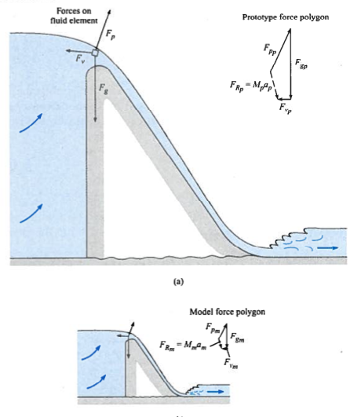
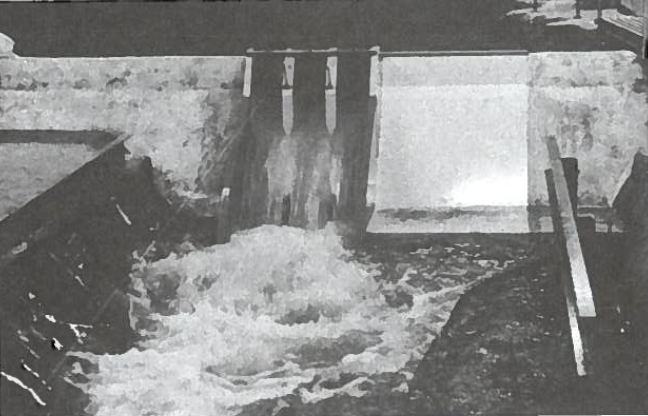
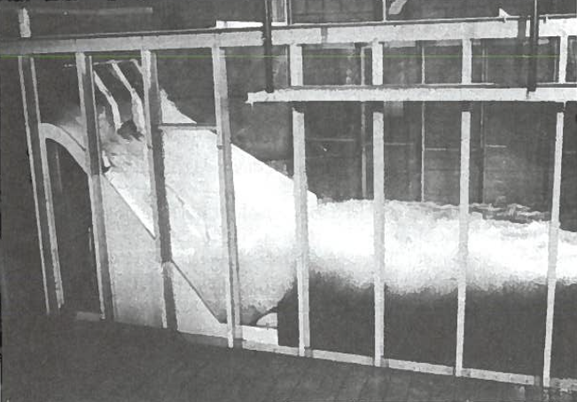
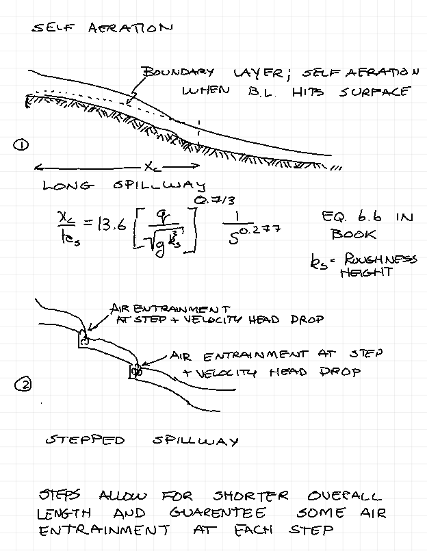
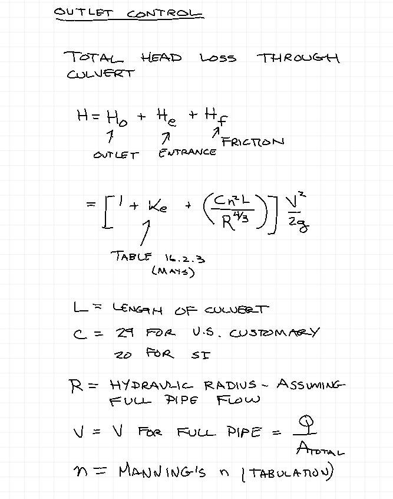
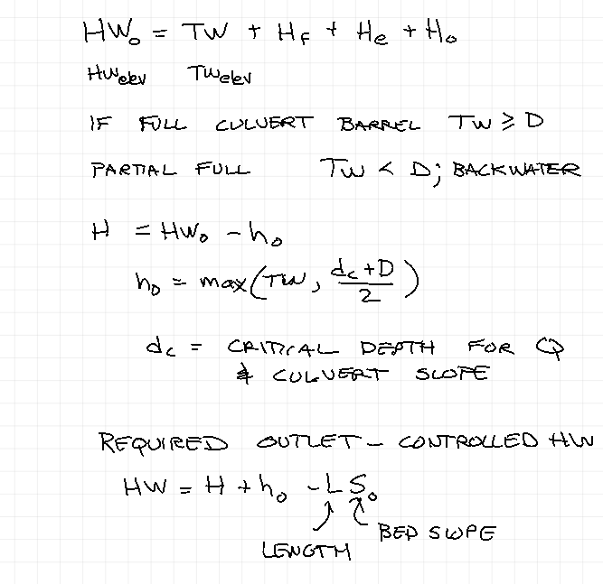
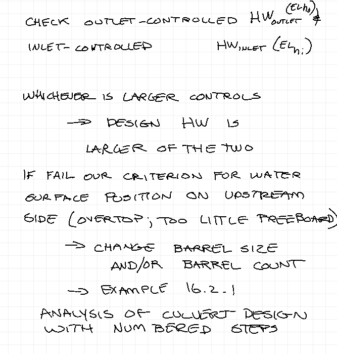
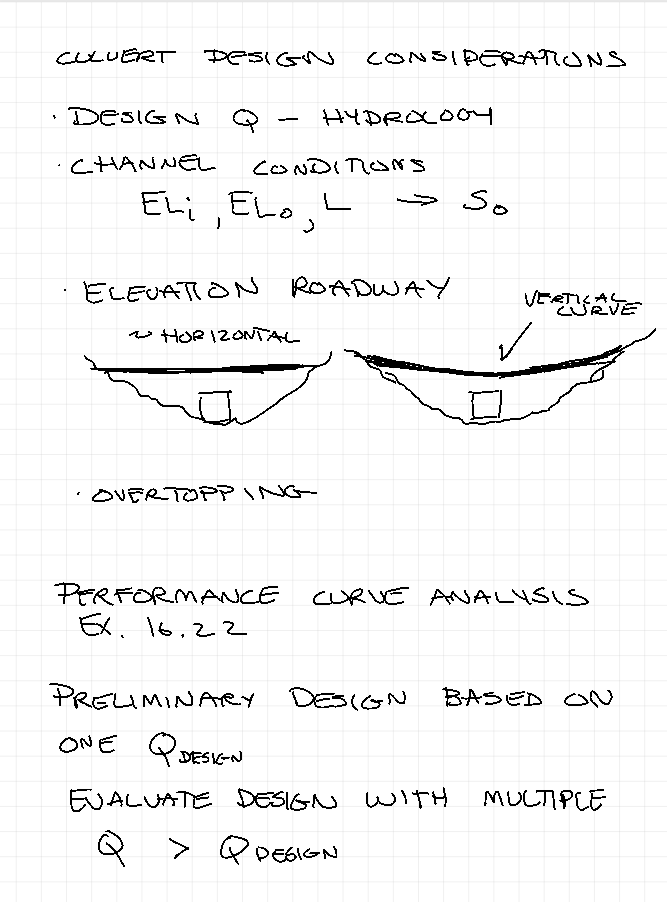
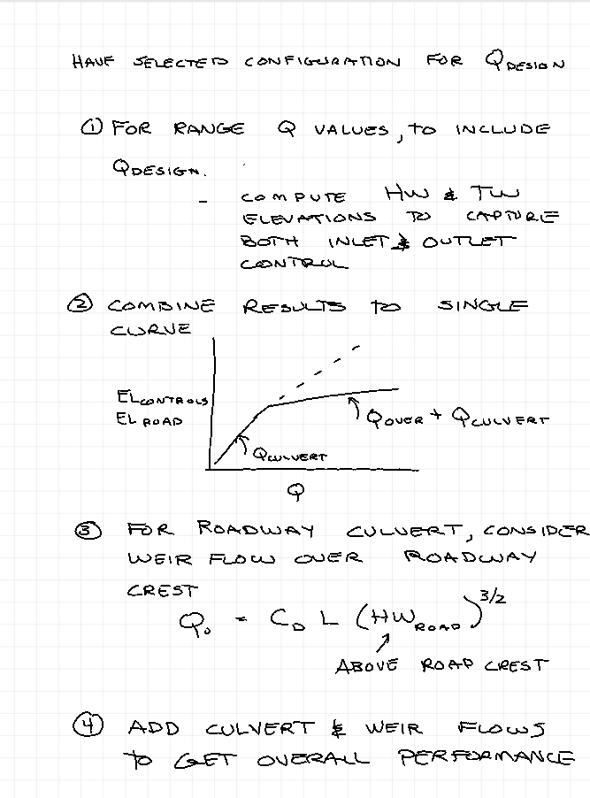

Hydraulic Structures¶
6.1 Common hydraulic structures:¶
Spillways
Bridge
Culverts
Backwater-head-discharge relationships are typically needed. GVF and RVF both occur, 1-D analysis is generally useful. For high-consequence (if failure) physical modeling is used to relate measurements made on a model (small scale) to the full-sized structure (prototype). In practice, when physical models are used one is trying to achieve dynamic similarity (force scales, geometry scales, kinematics scales, time usually does not, so most measurements use a concept called adjusted time).

Some photographs of physical models lifted from a old fluids book are shown below:
 
6.2 Spillways¶
Ogee shape (a lazy “S”), concrete lined (may be soil filled, or rock filled).
As head upstream increases pressure on spillway face decreases and cavitation is possible.
USACE ERDC design procedures are used to specify spillway shapes.
6.3 Aeration of spillways¶
Prevent cavitation by entraining air to create \(p = p_{atm}\) at bubble-liquid interface. (Also reduces bulk density of the air-water mixture).
Water+Bubbles != Water only
Long spillway length to produce self-aeration.

6.4 Stepped Spillways¶
Popular in construction - using roller compacted concrete (Lake Alan Henry is an example). The steps give air entrainment and good energy dissipation at the steps (kills velocity head over the drop, water has to accelerate after each drop which uses up excess energy).
Gabions are used in compact urban settings.
6.5 Culverts¶
All about culverts in Mays 2005 Water Resources Engineering (16.2)
Outlet Control Conditions¶



Mays 2005 Water Resources Engineering navigate to example 16.2.1
Design Considerations

Performance Curve
